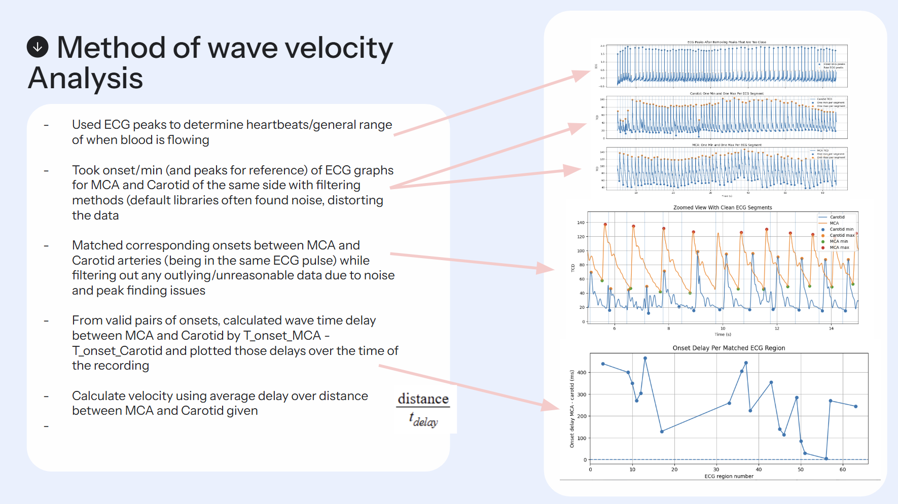

Biomedical Research
CSF Flow Analysis
Built Python workflows to extract, clean, compare, and visualize cerebrospinal fluid (CSF) flow features from medical imaging and physiological datasets. The project supported research into noninvasive assessment of Chiari malformation surgical outcomes.
I developed a reproducible pipeline to import raw flow data, remove noise, normalize metrics across subjects, and compute derived features such as peak velocity, waveform shape, and pulsatility. The analysis was designed to be transparent and repeatable for the research team.
My visualizations translated complex fluid dynamics into intuitive comparisons between preoperative and postoperative cases, helping clinicians and researchers identify meaningful changes and improve surgical outcome assessment.
Code & Repository
The complete analysis pipeline is documented and available on GitHub. Below is a snapshot of the core workflow, along with a link to the full repository where you can explore the code, documentation, and example datasets.

GitHub Repository: csf-flow-analysis →